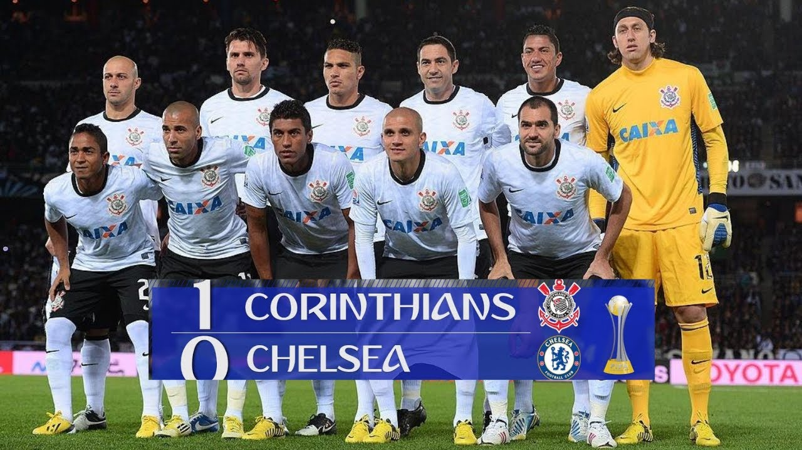

Fundado em 1910
O Sport Club Corinthians Paulista é o maior clube de futebol do mundo. Fundado em 1º de setembro de 1910, o clube nasceu no bairro do Bom Retiro, em São Paulo, por um grupo de operários. O nome foi inspirado no Corinthian Football Club da Inglaterra, que havia visitado o Brasil naquele ano.
Conhecido como "Time do Povo", o Corinthians possui uma das maiores torcidas do mundo, com milhões de fiéis espalhados por todo o Brasil e exterior. Suas cores são o preto e branco, e sua torcida é conhecida como o "Bando de Loucos" por ser a mais apaixonada e fiel do Brasil.
| Competição | Títulos | Anos |
|---|---|---|
| Mundial de Clubes da FIFA | 2 | 2000, 2012 |
| Copa Libertadores da América | 1 | 2012 |
| Campeonato Brasileiro | 7 | 1990, 1998, 1999, 2005, 2011, 2015, 2017 |
| Copa do Brasil | 4 | 1995, 2002, 2009, 2025 |
| Campeonato Paulista | 31 | Diversos anos. Mais recentemente em 2025. |
